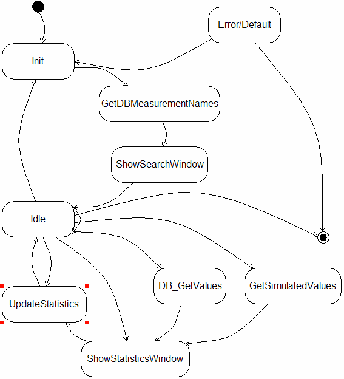

State diagrams are used to describe the behavior of a system. State diagrams describe all of the possible states of an object as events occur. Each diagram usually represents objects of a single class and track the different states of its objects through the system.
When to Use: State Diagrams
Use state diagrams to demonstrate the behavior of an object through many use cases of the system. Only use state diagrams for classes where it is necessary to understand the behavior of the object through the entire system.
A state diagram could be connected to a VI (right click on diagram and select "Configure").
When this is done you can right click again and now select "Update diagram...", this will analyse the selected VI and draw a state diagram of that state machine found in the VI.
